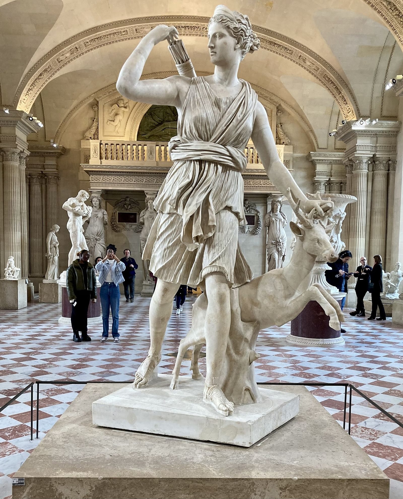

Goddess of the Hunt and the Wild, Protector of Girls and Childbirth

Artemis with a Hind (the Diana of Versailles), Roman marble after Leochares, 1st–2nd century CE — Musée du Louvre, Paris
Artemis is the goddess of everything untamed: the hunt, the deep forest, the mountain wild, and every creature that lives there by its own law rather than man's. She is also, in the same unbroken breath, the goddess of girls before marriage and of women labouring to bring a child into the world, a range that only looks contradictory until one notices the common thread: Artemis governs the border between the human order and the wild, whether that wild is a forest full of stags or a body about to become, suddenly and irreversibly, a mother. She chose virginity outright, as a formal boon that Zeus, her father, granted rather than merely tolerated, and she holds to it with the same rigour she brings to everything else: those who trespass across her boundaries, deliberately or by accident, are answered without appeal. She is protector and punisher through the same authority, not two roles but one, since the goddess who shields the young doe from harm is the same goddess who lets the hounds finish what they start. Her later, very familiar identification with the moon is worth flagging as exactly that: later. It is a Hellenistic literary conflation with the Titaness Selene, archaic Greece's proper moon goddess, and though it has become so thoroughly attached to Artemis that she is now rarely pictured without a crescent, it formed no part of her original, archaic character.
The MythsApollodorus's Bibliotheca and later mythographers preserve the tradition that Leto, pregnant by Zeus, was hunted across the Aegean by Hera's jealousy until she found refuge on the floating island of Delos, the one place Hera's ban on solid ground could not reach. There Artemis was born first, without the pains that would attend her brother's birth, and immediately turned midwife: she assisted her own mother through nine days of labour to deliver her twin, Apollo. The detail is characteristic rather than incidental. Artemis is not merely present at the border between danger and safe delivery; in the very myth of her own birth she is already the one presiding over it, an infant goddess competent in the one office she will hold for every mortal woman afterwards. Hera's obstruction of Leto's labour, sustained through her agent Eileithyia in some tellings, establishes the pattern the two goddesses repeat throughout the mythology: Hera's jealousy of Zeus's other unions falling hardest on the children least responsible for them.
Ovid's Metamorphoses (Book 3) tells the best-known version: the huntsman Actaeon, out with his hounds on Mount Cithaeron, stumbles by pure accident on the grotto where Artemis is bathing naked with her nymphs. She has no interviewer's mercy for the accident. Enraged at being seen, she splashes water over his head and transforms him into a stag; his own fifty hounds, no longer recognising their master, run him down and tear him apart while his hunting companions cheer the kill without realising whose death they are watching. Ovid's account is Roman and highly coloured, but the underlying logic is native and older: Callimachus, in his Hymn 5 (The Bath of Pallas), uses the identical principle to explain why the seer Tiresias was struck blind for glimpsing Athena bathing, arguing that no mortal who sees a goddess unclothed does so and keeps his old life. Actaeon's death is not really about cruelty; it is about the absoluteness of the boundary Artemis embodies, crossed by accident and paid for regardless.
Also from Ovid (Metamorphoses, Book 2): Callisto, an Arcadian nymph sworn like all Artemis's companions to lifelong chastity, was seduced by Zeus, who approached her disguised as Artemis herself to get close enough. When her pregnancy became visible while bathing with the other nymphs, Artemis expelled her from the band without hesitation, and Callisto was afterwards turned into a bear, an event the sources attribute variously to Hera's jealousy, to Zeus concealing the evidence, or, in some versions, to Artemis's own fury at the broken vow. Callisto lived on as a bear until her grown son Arcas, out hunting, nearly killed her in ignorance; Zeus intervened and set mother and son among the stars as the Great and Little Bear. The variation over who does the transforming matters less than what stays constant across every version: for a companion of Artemis, the vow of chastity is not a formality but the entire basis of belonging, and its breach, willing or not, ends the same way.
When the Greek fleet lay becalmed at Aulis, unable to sail for Troy, the sources disagree sharply about both Artemis's grievance and the outcome, and the disagreement is worth preserving rather than resolving. In Aeschylus's Agamemnon, the goddess is angered by an offence of Agamemnon's (the killing of a hare sacred to her, in the fuller tradition behind the play, or simply an unspecified impiety) and demands the sacrifice of his daughter Iphigenia as the price of a fair wind; the king complies, and the play treats the killing as real and as the curse that unravels his household on his return. Euripides, in Iphigenia in Tauris, gives an entirely different ending: at the last moment Artemis substitutes a deer on the altar and spirits the girl away to the land of the Taurians, where she serves as the goddess's priestess, tasked with the grim duty of preparing shipwrecked strangers for sacrifice, until her own brother Orestes arrives to rescue her. Both endings were current in Athens at once; there is no single authoritative version, only a myth Athenian tragedy used twice for two different purposes.
The death of Artemis's giant hunting companion Orion is one of Greek mythology's genuinely irreconcilable traditions rather than a single story with minor variants. Homer's Odyssey (5.121–124) already gives one account in passing: Orion was killed by Artemis with her gentle arrows on Ortygia after the dawn goddess Eos took him as a lover, the goddess's jealousy of a rival claiming him. Later mythographers offer quite different causes: that Artemis killed him for challenging her to a discus match or attempting to violate her, or, in the version many ancient sources actually preferred, that Orion boasted he would kill every beast on earth and the earth goddess sent a giant scorpion to sting him to death, the origin of the constellations of Orion and Scorpio being set on opposite sides of the sky so they never rise together. No version cancels the others; the tradition simply holds several causes of death for one man, and the honest account presents that plurality rather than picking a favourite.
Epithets and DomainsHer oldest and most fundamental title, used already in the Iliad (21.470): sovereign of the wild beasts, neither their enemy nor their tame keeper but the authority under which they live.
Her aspect invoked before battle. Athenian generals vowed goats to Artemis Agrotera before Marathon and sacrificed the promised number annually afterwards at her sanctuary at Agrai, a debt the city kept paying for generations because the actual goat count exceeded what could be found in one year.
Her cult at the Attic sanctuary of Brauron, where young Athenian girls before marriage underwent the arkteia, "playing the bear", a rite of passage in yellow robes preparing them for the transition into adult womanhood under the goddess's authority.
The aspect invoked directly in labour, appealed to for a safe delivery and, when it went badly, blamed for the death; women who died in childbirth were said to have been struck by her arrows.
The great cult of Ephesus in Anatolia, whose temple was one of the Seven Wonders of the ancient world and whose cult image, studded with rounded protrusions across the chest usually read as many breasts (though eggs, gourds or bull testes have also been proposed), bears little resemblance to the huntress of Greek art. The Ephesian Artemis is a distinct fusion with an older Anatolian mother goddess, worshipped under the Greek name but not, in origin, the same figure.
Her cult at Sparta, centred on a sanctuary where Spartan youths underwent an endurance ordeal involving ritual flogging before her altar, described by Pausanias (3.16); Roman-era sources record the ordeal escalating to the point that some youths reportedly died enduring it without a sound.
Named for the mountain on her birth island of Delos, tying the goddess directly back to the site of her own nativity.
Artemis is the archetype of autonomy: the self that belongs to itself. Jean Shinoda Bolen, in Goddesses in Everywoman, treats her as the pattern of the focused, goal-directed woman who neither defines herself through relationship (Hera's axis) nor through nurture (Demeter's), but through aim: the huntress moves through wild country towards a chosen target, in the company of equals, owing nothing. Her virginity, like Athena's, reads psychologically as inviolability, but where Athena's is armour worn in the citadel, Artemis's is distance kept in the wild: she is not defended against the world of men and cities, she is simply elsewhere, and her elsewhere is sovereign territory. That she is also the goddess of childbirth and of girls at the threshold is not the paradox it first appears: she guards every passage where a female life is most exposed, precisely because she is the one goddess nothing has ever been able to touch.
The light expression is magnificent and increasingly legible in modern culture: focus that does not negotiate, boundaries that do not apologise, sisterhood as a chosen band of equals, and a protective instinct that runs to the vulnerable rather than the impressive. Artemis consciousness is happiest in terrain nobody owns, literal wilderness or its professional equivalents, the unmapped problem, the frontier field, the cause nobody else will take. And it is the archetype of the clean kill in the honourable sense: when something must end (a project, a relationship, an abuse), Artemis ends it swiftly and without sadism, which the other archetypes rarely manage.
The shadow is proportionality, and the myths refuse to soften it. Actaeon made a mistake, not an assault, and was torn apart by his own hounds for it: the shadow Artemis cannot grade violations, and answers the accidental trespass with the full penalty. Callisto was her companion and a victim of Zeus, and was expelled (in some tellings transformed) for a violation she did not choose: the purity that protects the band turns on its own weakest member, and the protector becomes the punisher of the already-punished. Iphigenia shows the same knife from a third angle, the innocent young life demanded as the price of other people's war, whether the goddess completes the sacrifice or substitutes the deer depending on which poet you trust. The pattern's work is to keep the bow and learn the scale: to notice whether the thing in the clearing was a predator or a lost boy, and to stop administering wilderness law to people who were trying to love her.
In Modern LifeArtemis is the most contemporary-feeling of the Olympians. She is the founder of the women's shelter and the women's fund; the wilderness guide and the ultrarunner; the investigative journalist on the trail nobody assigned; the specialist who chose mastery over management and single life over compromise, and meant both. Anywhere a person has drawn a hard boundary around their own life and built something real inside it, she is present, and she is the tutelary archetype of every band of equals that forms around a shared pursuit rather than a hierarchy.
In organisations the Artemis pattern is the brilliant individual contributor or small-team leader who does not do politics, does not want the promotion that means meetings, and protects her people ferociously. The coaching presentation is distinctive. Boundaries have become walls: the reflex that guards the self starts refusing allies, mentors and love indiscriminately, and the band of equals thins to solitude that is called freedom but feels like exile. The Actaeon problem: someone crossed a line, usually clumsily rather than maliciously, and the response ended a career or a friendship; the work is building a scale of response where the only setting is not maximum. And the Callisto problem, endemic in values-driven organisations: the movement that punishes its own imperfect members more harshly than its actual opponents, purity spiralling into expulsion. Naming these as the shadow of a genuinely noble pattern, rather than as character flaws, is usually what lets an Artemis client look at them.
The growth edge is almost always relational, and it is specific: not "open up", which the pattern rightly hears as "disarm", but reciprocity between sovereigns, alliance that does not cost autonomy. The myths offer exactly one image of it, Orion, the companion hunter, her equal in the field, and every version of that story ends with him dead, in several by her own arrow. The tradition seems to know how hard this edge is. That is not a reason to put the bow down; it is the reason the work matters.
CorrespondencesThe Moon, by her identification with Selene. The conflation is Hellenistic and later, the mirror of Apollo's with the sun; archaic Artemis is a goddess of the wild, not the lunar disc. Use the lunar correspondence knowing its date.
Monday (dies Lunae), through the same lunar identification. Doubly conventional, as with Apollo and Sunday.
The sixth: her birthday in Greek reckoning, the day before her twin's seventh, and attested in Athenian calendar custom.
Silver, white, forest green; saffron yellow has a real cult anchor in the krokotos, the saffron robe worn by the little "bears" at Brauron. The first three are modern convention.
The bow and quiver, the hind, the hunting torch (she is often shown torch-bearing), the crescent (late, via Selene), the hunting dogs given by Pan.
The deer above all (her chariot was drawn by hinds); the bear, from the Brauron rite where Athenian girls "played the bear" before marriage; the boar, her chosen instrument of punishment (the Calydonian boar); the quail, from Ortygia, "quail island", one name of her birthplace.
Wormwood and its relatives carry her name from antiquity: the genus Artemisia was already connected to her by ancient writers on plants. Cypress and wild plants generally belong to her domain rather than to any list. Specific herb lists in modern books are convention; the Artemisia link is the one with an ancient thread.
Attested and vivid: goats (the Athenians vowed a goat to Agrotera for every Persian killed at Marathon and were still paying the instalments years later, per Xenophon); the saffron robes at Brauron; the clothing of women who died in childbirth, dedicated at Brauron per Euripides' Iphigenia in Tauris; and the amphiphon, a round cake ringed with lit torches, offered to her at Mounychia.
The Brauronia, with the girls' bear-rite; the Mounychia at Piraeus, with the torch-lit cakes; the Elaphebolia, the deer-shooting festival that named an Athenian month; the ordeal-rites of Orthia at Sparta (Pausanias 3.16).
Brauron in Attica; Ephesus, whose Artemision was one of the Seven Wonders (a distinct Anatolian fusion, as the page notes); Delos and Mount Cynthus; Sparta (Orthia); Mounychia above Piraeus.
Two details worth keeping. The amphiphon, "shining-all-round": a flat round cake set with burning torches, carried to her shrines when the moon rose full over Mounychion, and by most accounts the direct ancestor of the birthday cake with candles. Any modern rite for Artemis has its centrepiece ready-made and three millennia deep. And the Brauron dedications are the archetype in one image: the wardrobe of a woman who died giving birth, hung up in the sanctuary of the untouched goddess. The Greeks gave the guardianship of women's most dangerous passage to the one female power that never made the crossing, sovereignty watching over surrender.
Zeus and Leto
Apollo, born moments after her on Delos and delivered, in the tradition, with her own assistance
The nymphs of her retinue, sworn to lifelong chastity as the condition of running with her; Orion, her one male hunting companion, whose death the tradition cannot agree on but never disputes
Actaeon, torn apart by his own hounds for a glimpse of her bathing; Niobe's daughters, shot down alongside their brothers (whom Apollo killed) as punishment for their mother's boasting; Agamemnon, whose offence becalmed the fleet at Aulis; Callisto, the companion expelled and transformed after Zeus's deception; and Hera, who pursued her mother Leto before Artemis was even born